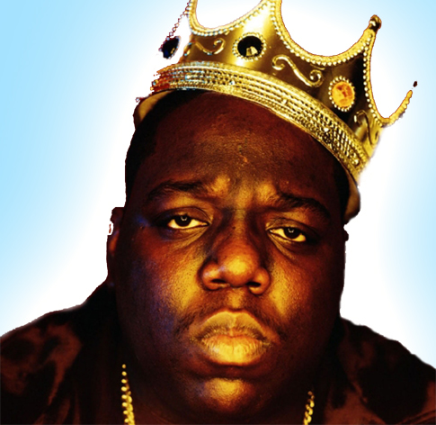
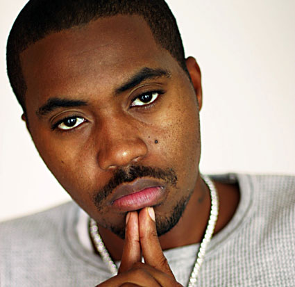

East Coast Rap
"Where Hip-Hop Lives"
About East Coast Rap
Hip-hop was started in New York, and its artists have remained fiercely loyal to their roots and proud of their origins. East Coast hip-hop emphasizes lyrical content over style, and its beats and melodies tend to be quite aggressive. Those in the know often refer to East Coast hip-hop beats as "boom bap;" in fact, today, many hip-hop purists lament the fact that "boom-bap" hip-hop has fallen out of favor with mainstream audiences. East Coast beats also often feature soulful samples. DJ Premier, perhaps the region's most notable producer, helped define this sound in the mid-90's, with records such as "NY State of Mind" by Nas, which samples "Flight Time" by jazz musician Donald Byrd.
Ryan's Top Websites
Ryan's Favorite East Coast Rap Song
I love Dead Presidents by Jay-Z. The song was produced by Ski, and samples Lonnie Liston Smith's "A Garden of Piece," which is a beautiful jazz track that hits some very melancholic notes. In the chorus, Jay-Z samples Nas rapping "I'm out for Presidents to represent me...I'm out for Dead Presidents to represent me." Jay is essentially saying that while he would love to have politics and the system represent his views and interests, he's learned better over the years, and now only counts on Dead Presidents (meaning money) to have his back. The sparse piano that pervades the beat is haunting, and reminds the listener that all is not well in Jay-Z's part of town. Jay's lyrics complement the beat, especially when he rhymes about hard times and difficult choices. Jay warns his listeners about the trappings of fast money: One day you're cruising in your 7, next day you're sweating, forgetting your lies...Alibis ain't matching up, bullshit catching up. Hit with the RICO they repo your vehicle...Everything was all good just a week ago."
Notable East Coast Rappers
- 50 Cent
- AZ
- Big Pun
- Black Rob
- Foxy Brown
- Buckshot
- Busta Rhymes
- Cam'ron
- Canibus
- Fabolous
- Jadakiss
- Lil Kim
- Mobb Deep
- Wu Tang Clan
Ryan's Top 3 East Coast Rappers
- Nas 
- Notorious BIG
- Jay-Z

Behind the Ranking
Rapper |
Lyrics |
Beats |
|---|---|---|
Nas |
10/10 |
9/10 |
Notorious BIG |
9/10 |
9/10 |
Jay-Z |
8/10 |
9/10 |